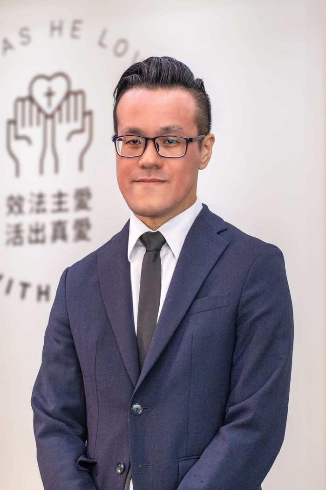

教牧同工

黃懿珽牧師 (主任牧師)
黃懿珽牧師出生於香港，自小在基督徒家庭成長，幼年蒙恩。後來蒙主呼召，於紐西蘭克里神學院接受裝備，獲得應用神學碩士學位。於本會英文堂牧養已有十年。

黃芷君牧師 (粵語堂)
黃芷君牧師出生於香港，已婚，育有兩女，在港牧會十多年，擁有道學碩士和婚姻及家庭治療碩士學位。2023年初到紐西蘭聖道堂服侍，主職牧養粵語群體。

林立文牧師 (粵語堂)
林立文牧師出生於香港，已婚，育有兩女。初中時信主，後蒙主呼召，於香港播道神學院接受裝備獲得道學碩士學位，其後在港牧會十多年。於2025年初到紐西蘭並入職本會粵語堂。

郭錦富傳道 (華語堂)
郭錦富傳道於香港出生，高中時候信主、受洗。後赴台灣讀書工作，移居紐西蘭生活後，蒙上帝呼召回香港，於中國宣道神學院裝備，獲得道學碩士學位。其後分別於香港中國佈道會及香港路德會屬下教會服事。2022年入職本會華語堂。

楊凱文傳道 (英語堂)
楊凱文傳道於香港出生，初中時候信主、並於高中時候受洗。中學畢業後移居紐西蘭讀書，後來蒙上帝呼召，於紐西蘭克里神學院接受裝備，獲得應用神學學士學位以及教牧領袖訓練文憑。2024年入職本會英語堂。